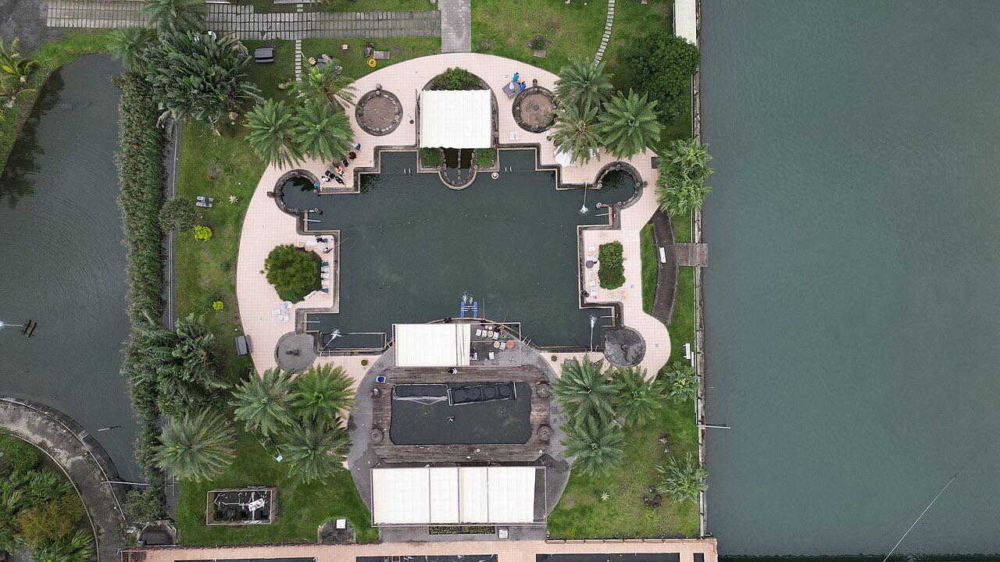
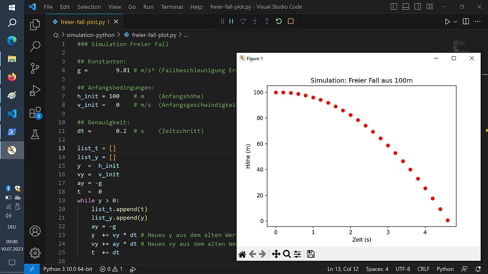
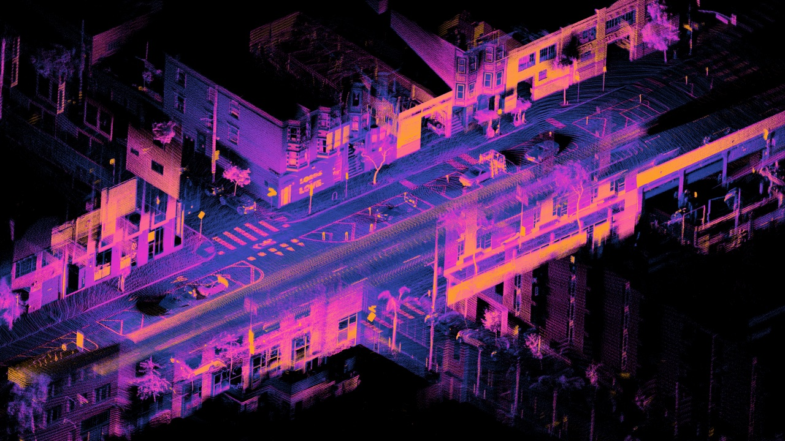

AI & Machine Learning
Hands-on ML, from fine-tuning transformer models to running full training notebooks. Always experimenting, always learning.
Software Analyst Developer · Germany
Hi, I'm Miguel Jarama. With more than eight years building software, I'm now exploring artificial intelligence, LLMs and machine learning — keeping things simple, durable and kind to the planet. Why not?! 🤘
“Embracing simplicity while designing for longevity.”
What I do
I enjoy working across the whole stack — with a soft spot for AI that serves people and the planet.
Hands-on ML, from fine-tuning transformer models to running full training notebooks. Always experimenting, always learning.
Retrieval-augmented chatbots and LLM tooling with LangChain — grounded answers instead of confident guesses.
Applying remote sensing and computer vision to sustainability — like spotting aquaculture fish cages from satellite imagery.
Eight-plus years shipping back-ends, APIs and databases across Java, Ruby and modern front-ends. Straightforward and long-lived.
Selected projects
A few highlights from my GitHub — machine learning experiments, environmental data work and web apps. Cards link straight to each repository.

Detecting aquaculture fish cages in satellite imagery — computer vision applied to monitoring marine environments and supporting sustainability.
View on GitHubA project to fine-tune a BERT model on custom data — practical, hands-on experience with transformers and training pipelines.
View on GitHubA retrieval-augmented generation chatbot built with LangChain — grounded, context-aware answers over custom documents.
View on GitHub
A hands-on exploration of LLM functionality — chains, agents, memory and tools — all the moving parts behind modern AI apps.
View on GitHub
Combining YOLO object detection with MiDaS depth estimation — an exploration of how machines perceive objects and space.
View on GitHubA travel budget and weather analysis app built with Svelte — plan trips with cost estimates and forecasts at a glance.
View on GitHubAbout me
I've worked as a software analyst developer for more than eight years — across databases, networks, hardware and the full arc of web development. If there's one thing I've learned, it's that restraint pays off: clear structure, honest code and features that earn their place.
Lately I've been fascinated by artificial intelligence. I've fine-tuned a BERT model, played with retrieval-augmented chatbots, worked through LangChain, and started applying computer vision to environmental problems — like spotting aquaculture fish cages from satellite imagery.
My motto is simple: “Why not?!” If a problem is worth solving, I'm curious enough to try. And I'd rather build something small and lasting than big and brittle — the quiet elegance of nature is a pretty good design brief.
Get in touch
Curious about a project, an idea or a collaboration in AI, sustainability or software? I'm always happy to talk — no matter the doubt.
Code, experiments and open source — explore the repositories behind this site.
Follow alongProfessional background and experience — happy to connect with fellow builders.
ConnectThoughts, notes and tutorials — the quieter side of the same curiosity.
Read posts